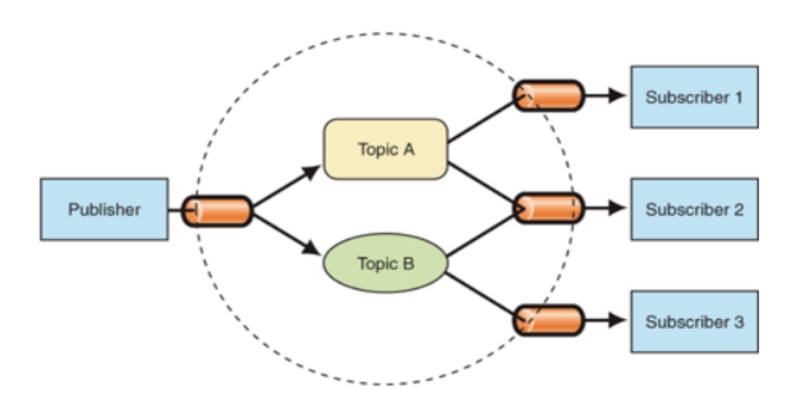

Создайте функцию mapAsync, которая принимает массив и колбэк-функцию, а возвращает промис, который разрешается в новый массив, содержащий результаты асинхронных операций, выполненных с помощью переданного колбэка.
Напишите функцию forEachAsync, которая принимает массив и колбэк-функцию. Функция должна вызывать переданный колбэк для каждого элемента массива асинхронно.
Напишите функцию getRandomBoolean, которая возвращает промис, разрешающийся случайным булевым значением (true/false) через заданное количество миллисекунд. Используйте setTimeout для задержки разрешения промиса.
Напишите функцию parallel, которая принимает массив функций-колбэков и вызывает их одновременно. Функция должна возвращать промис, который разрешается в массив результатов асинхронных операций, выполненных с помощью переданных колбэков.
Напиши функцию timeout, которая принимает асинхронную функцию и время ожидания в миллисекундах. Если асинхронная функция не завершится в течение указанного времени, то функция timeout должна прервать выполнение и вернуть ошибку.
Напиши функцию checkPrimeNumber, которая принимает число n возвращает промис, разрешающийся с булевым значением, указывающим, является ли число n простым числом. Используйте цикл и асинхронный await для проверки числа на простоту.
Реализуйте функцию eventEmitter, которая представляет собой простую реализацию паттерна "Издатель-Подписчик" (Publisher-Subscriber). Функция должна иметь методы subscribe, unsubscribe и publish. Подписчики должны быть оповещены о каждом событии, которое было опубликовано.
Подробнее о паттерне попробуйте найти самостоятельно (уметь гуглить хороший навык😉)